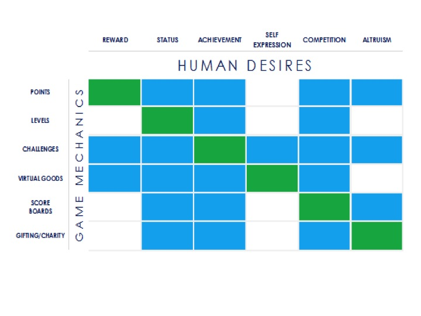

The interests page on this site will explain some of my more general interests that is more subject/topic
based than the hobbies page. This will contain more educational-related information. It will also
include brief descriptions of the interest and topic itself.
Interests Overview --
It's hard to describe my interests and what I am interested in, because I am generally interested in
anything and everything that isn't 'shallow'. What I find is that I am more interested in anything new that
poses somewhat of a challenge instead [Like most people I think.]
Some of my interests [in the general spectrum] that might be elaborated on include
Science [One of the first topics I was introduced to]
They were the first thing I've ever read about, and all of my younger years were filled with facts and information
about them.
I'm not really sure why, I just become really excited whenever I catch a glimpse of an animal. They're so
fascinating to study, with so many different behaviours and functions in their bodies. It's also really fun to
watch something you've read in a book being proven to you in real life. I rarely see animals in the city, with
the exceptions of different squirrel species, raccons, robins, and a few other bid species.
I'm also interested in the flora side of wildlife, all the plants and herbs there are. They have so many different
medicinal and dangerous properties that it's exhilarating to study them , and tehn seek them out in the wild. What I
hope for is to one day find and observe the plant properties.
Psychology --
Example of how psychology tricks and tactics are applied in [daily] life

Psychology is an interesting subject because it allows [sort of in a way]
someone to understand more and have a
better grasp on why
other people made the choice they made, or acted the way
they did.
It is also particularly thought-provoking and engaging because
whenever you learn something psychological,
the same
concept also applies to the learner.
"Opportunity is missed by most people because it is dressed in overalls and looks like work."